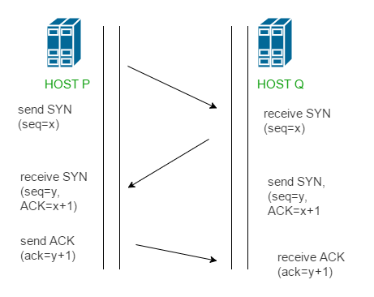

This could also be seen as a way of how TCP connection is established. Before getting into the details, let us look at some basics. TCP stands for Transmission Control Protocol which indicates that it does something to control the transmission of the data in a reliable way.
The process of communication between devices over the internet happens according to the current TCP/IP suite model(stripped out version of OSI reference model). The Application layer is a top pile of stack of TCP/IP model from where network referenced application like web browser on the client side establish connection with the server. From the application layer,the information is transferred to the transport layer where our topic comes into picture. The two important protocols of this layer are – TCP, UDP(User Datagram Protocol) out of which TCP is prevalent(since it provides reliability for the connection established). However you can find application of UDP in querying the DNS server to get the binary equivalent of the Domain Name used for the website.

TCP provides reliable communication with something called Positive Acknowledgement with Re-transmission(PAR). The Protocol Data Unit(PDU) of the transport layer is called segment. Now a device using PAR resend the data unit until it receives an acknowledgement. If the data unit received at the receiver’s end is damaged(It checks the data with checksum functionality of the transport layer that is used for Error Detection), then receiver discards the segment. So the sender has to resend the data unit for which positive acknowledgement is not received. You can realize from above mechanism that three segments are exchanged between sender(client) and receiver(server) for a reliable TCP connection to get established. Let us delve how this mechanism works :

- Step 1 (SYN) : In the first step, client wants to establish a connection with server, so it sends a segment with SYN(Synchronize Sequence Number) which informs server that client is likely to start communication and with what sequence number it starts segments with
- Step 2 (SYN + ACK): Server responds to the client request with SYN-ACK signal bits set. Acknowledgement(ACK) signifies the response of segment it received and SYN signifies with what sequence number it is likely to start the segments with
- Step 3 (ACK) : In the final part client acknowledges the response of server and they both establish a reliable connection with which they will start eh actual data transfer
The steps 1, 2 establish the connection parameter (sequence number) for one direction and it is acknowledged. The steps 2, 3 establish the connection parameter (sequence number) for the other direction and it is acknowledged. With these, a full-duplex communication is established.
Note – Initial sequence numbers are randomly selected while establishing connections between client and server.
References-
Connection establishment – Wikipedia
TCP 3-Way Handshake
TCP 3-Way Handshake – TCPIPguide